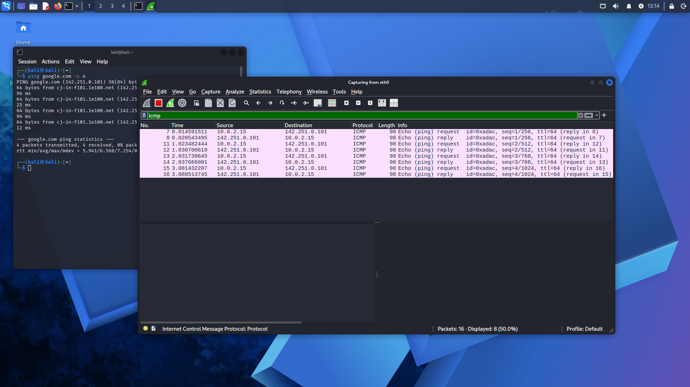
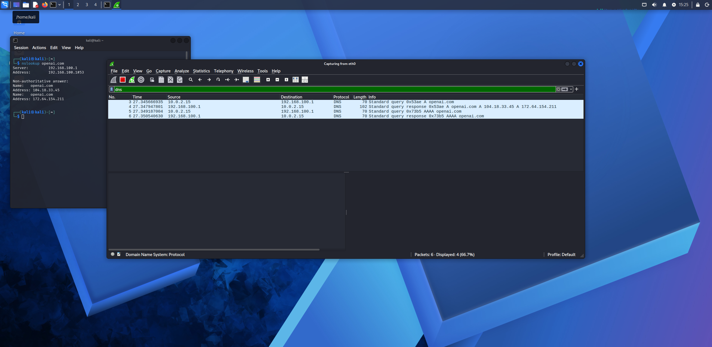
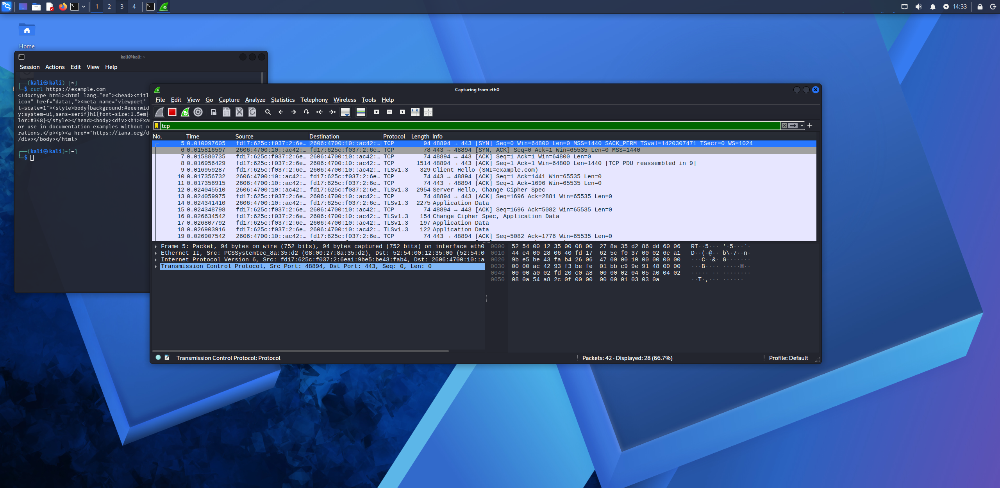

🎯 Objetivos del Laboratorio
Comprender el ciclo de vida de los paquetes en la red a través de la captura interactiva con Wireshark, analizando cabeceras, flags y mecanismos de negociación:
- ✓ Captura en tiempo real: Filtrar e inspeccionar paquetes que viajan entre el host local (10.0.2.15) y servidores en Internet.
- ✓ Análisis de ICMP: Examinar la correlación entre peticiones Echo Request y respuestas Echo Reply, identificando campos de secuencia y tiempo de respuesta.
- ✓ Resolución DNS: Observar cómo se estructuran las peticiones estándar de consulta (Query A / AAAA) y cómo el servidor DNS responde con las direcciones IP correspondientes.
- ✓ Negociación TCP & Cifrado TLS: Desglosar el saludo de tres vías (SYN, SYN-ACK, ACK) y la transición hacia el canal seguro HTTPS a través de TLS Client Hello.
🔬 Desglose de Protocolos Auditados
1. ICMP (Internet Control Message)
Verificación de conectividad bilateral. Se identificaron tipos y códigos ICMP (Type 8 para solicitud y Type 0 para respuesta) sin fragmentación ni latencias anómalas.
2. DNS (Domain Name System)
Peticiones sobre UDP puerto 53 para dominios como google.com y openai.com, visualizando respuestas con múltiples registros A (IPv4) y AAAA (IPv6).
3. TCP & TLS (HTTPS)
Establecimiento de sesión confiable mediante banderas SYN, SYN-ACK y ACK en puerto 443, seguido inmediatamente por la negociación criptográfica Client Hello.
icmp
dns && (dns.flags.response == 0 || dns.flags.response == 1)
tcp.flags.syn == 1 || tls.handshake.type == 1
📸 Evidencias de Captura en Wireshark
Haz clic sobre cualquier imagen para inspeccionar en pantalla completa el panel de paquetes, cabeceras y detalles hexadecimales:

🔍 Ver captura completa
1. Tráfico ICMP (Ping)
Captura de paquetes Echo Request originados en la IP local (10.0.2.15) y su correspondiente Echo Reply remoto.

🔍 Ver captura completa
2. Consultas y Respuestas DNS
Resolución de nombres para google.com y openai.com desglosando queries y servidores de nombres.

🔍 Ver captura completa
3. TCP Handshake & TLS
Saludo de tres vías (SYN / SYN-ACK / ACK) seguido de paquete Client Hello al invocar petición HTTPS con curl.
🧠 Aprendizajes Clave & Aplicabilidad en Seguridad
El análisis de paquetes es una de las competencias más críticas para roles de Blue Team, SOC Analyst y Respuesta a Incidentes:
- ✓ Detección de Anomalías de Red: Identificar retransmisiones excesivas, escaneos TCP SYN sigilosos (SYN stealth scan) y tráfico fuera de puertos convencionales.
- ✓ Inspección de Tráfico Cifrado vs. No Cifrado: Comprender qué metadatos permanecen visibles (SNI en Client Hello, IPs de destino, tamaños de paquete) aun cuando la carga útil esté protegida por TLS.
- ✓ Análisis de C2 y Exfiltración: Bases para investigar técnicas de tunelización DNS (DNS tunneling) o beaconing ICMP utilizados por actores de amenazas.